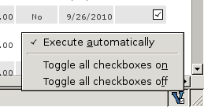
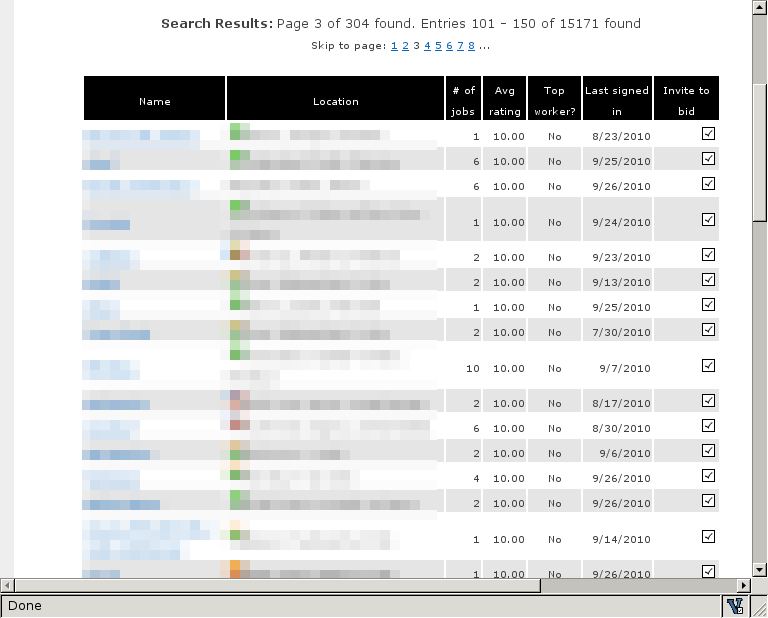

When searching for workers on the vWorker.com site, you get a results page with the list of the suitable coders from where you can select (via checkboxes) which ones you want to invite to bid on your project. Unfortunately, vWorker.com provides no way of selecting all of them automatically: you have to individually click by hand on the checkbox next to each worker's name, which might be a tedious task when the list of workers is extensive.
In an intent to make the inviting process faster, we have created and are happy to announce the vWorker Select All Workers extension for Mozilla Firefox (compatible with the 2.x and 3.x versions). This addon selects all the workers automatically when the user opens a vWorkers.com results page, without requiring any intervention from him. It also adds an icon to the status bar, which provides features for manually selecting or deselecting all the workers at once easily via a context menu. Note that these options are only enabled when a vWorkers.com results page is on the current browser tab.
As for the technical details, the extension uses an overlay that adds a listener to the DOMContentLoaded event (which is fired every time a page finishes loading). This listener (vworkerUtil.onPageLoad(aEvent)) checks if the page loaded belongs to a vWorkers.com results page by inspecting the URL, and if the "Execute automatically" option is set, it executes the function that actually toggles the checkboxes on (vworkerUtil.toggleCheckboxes(doc, checked)). In turn, this function retrieves a list with all the checkboxes on the page using XPath, and toggles its "checked" state. The overlay also adds the icon to the status bar, with the options for the context menu. Once the user clicks on the icon, the options are enabled or disabled depending on the current page by using the "onpopupshowing" attribute of the popup menu.
The source code for vWorker Select All Workers is available under a 3-clause BSD license and is available at http://github.com/turian/vworker-select-all-workers-firefox-extension. The extension has been developed by Joseph Turian and Diego Moreda (http://github.com/diego-plan9).